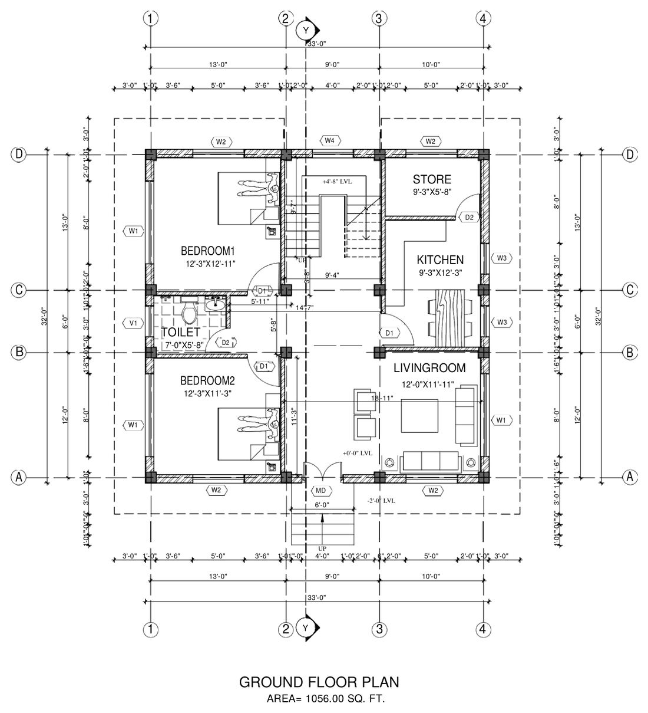
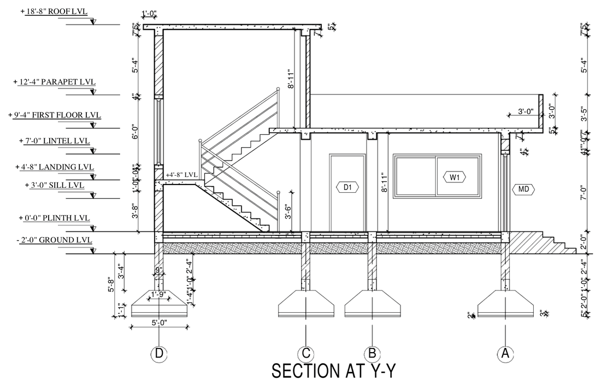
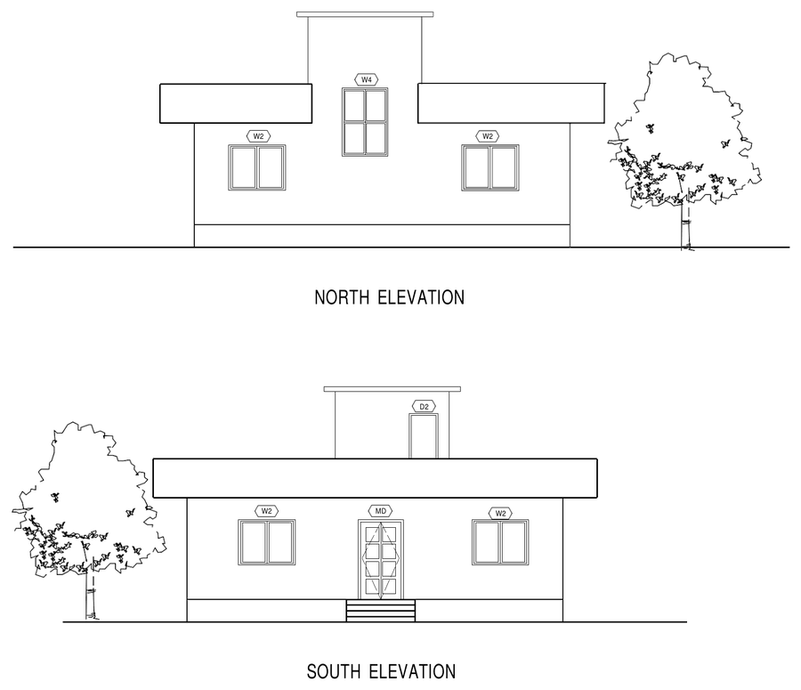
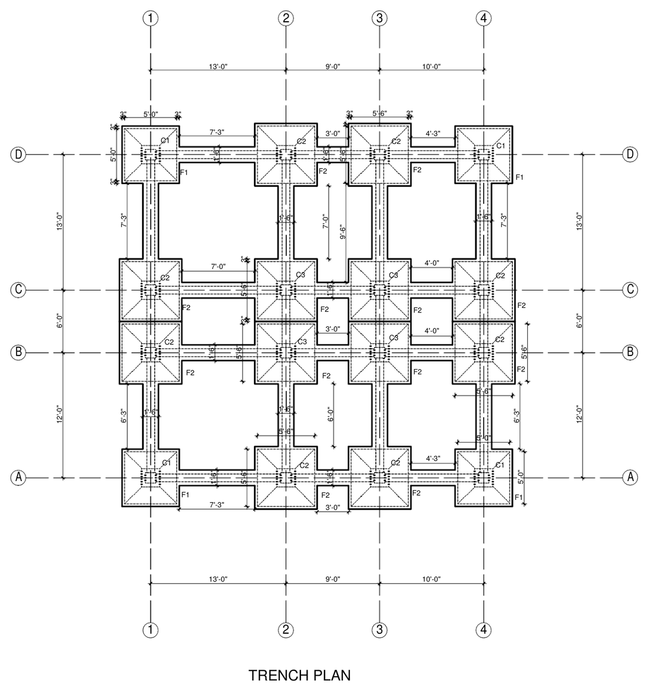
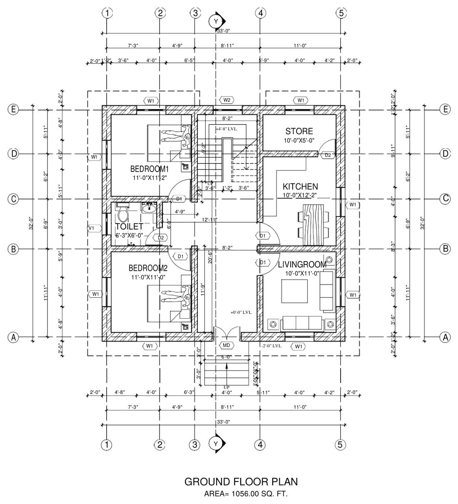
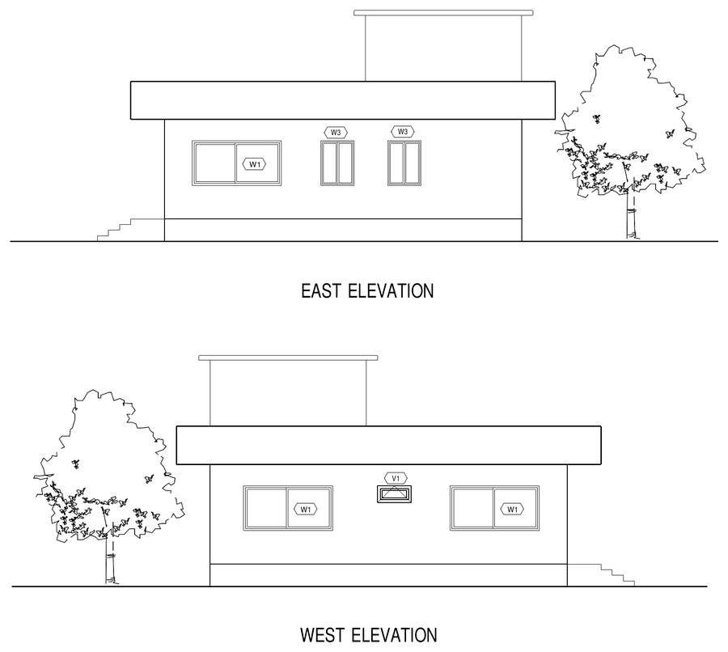
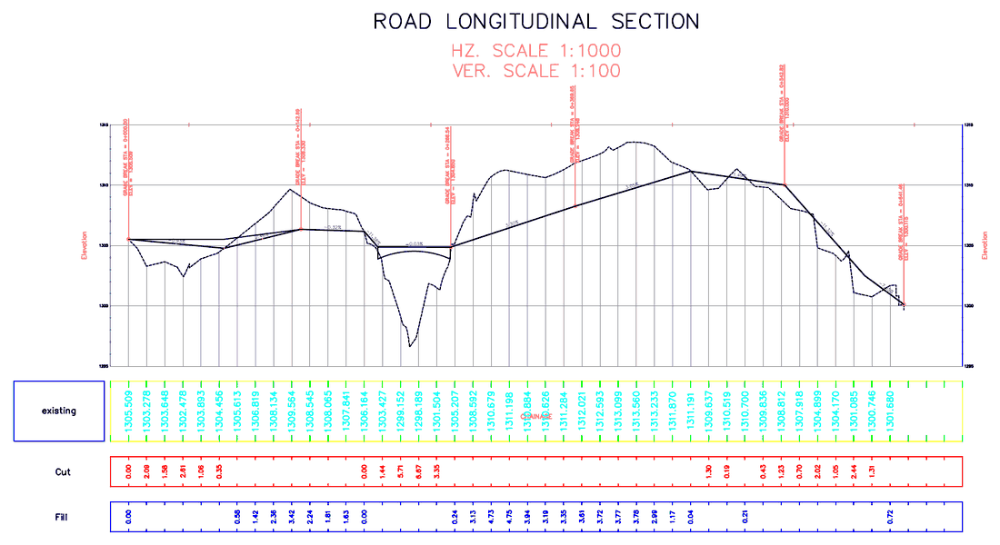

Residential building drawing set and cost estimate
I prepared drawings and detailed cost estimates for a 1,056 sq ft (33 ft by 32 ft), one-story house. Using AutoCAD, I developed plans, sections and elevations for two options: a reinforced concrete frame on isolated footings and load-bearing brick walls on strip footings.


For each option, I completed itemized quantity takeoffs in Excel for excavation, concrete, brickwork, reinforcement, finishes, doors and windows. I analyzed rates using material, labor and equipment costs, then compiled the cost summary. The estimate included allowances of 10% each for sanitary and electrical work, 3% for contingencies and 13% VAT.
| RC frame | Load-bearing walls | |
|---|---|---|
| Civil works | NPR 3.32 million | NPR 3.01 million |
| Total cost | NPR 4.61 million | NPR 4.18 million |
For this specific building and the rates used in the project, the load-bearing option had an estimated total cost approximately 9% lower than the reinforced concrete frame option.




The report also includes a road estimate based on earthwork quantities from longitudinal and cross sections, along with subgrade, subbase, base and bituminous surfacing quantities. The estimated total was approximately NPR 43.4 million, including contingencies, work charge and VAT.
Additional figures







